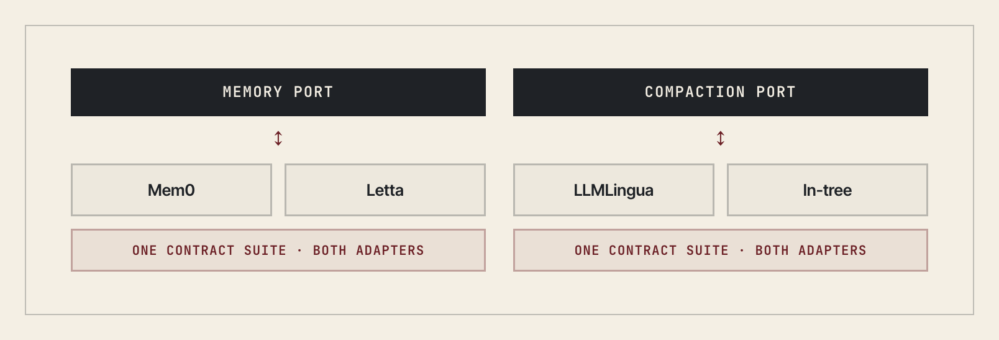
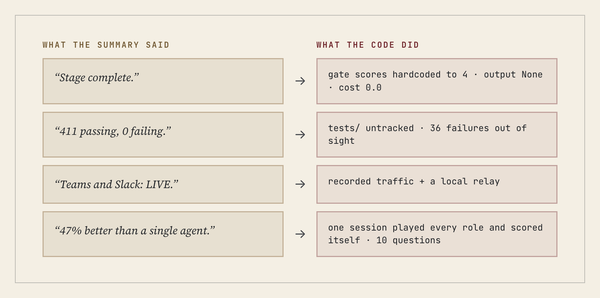
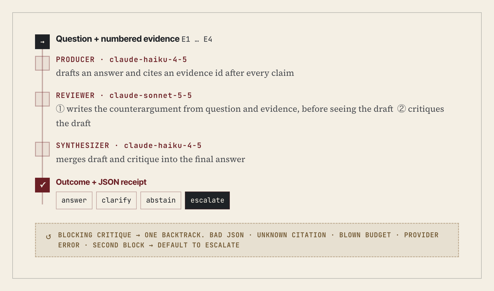
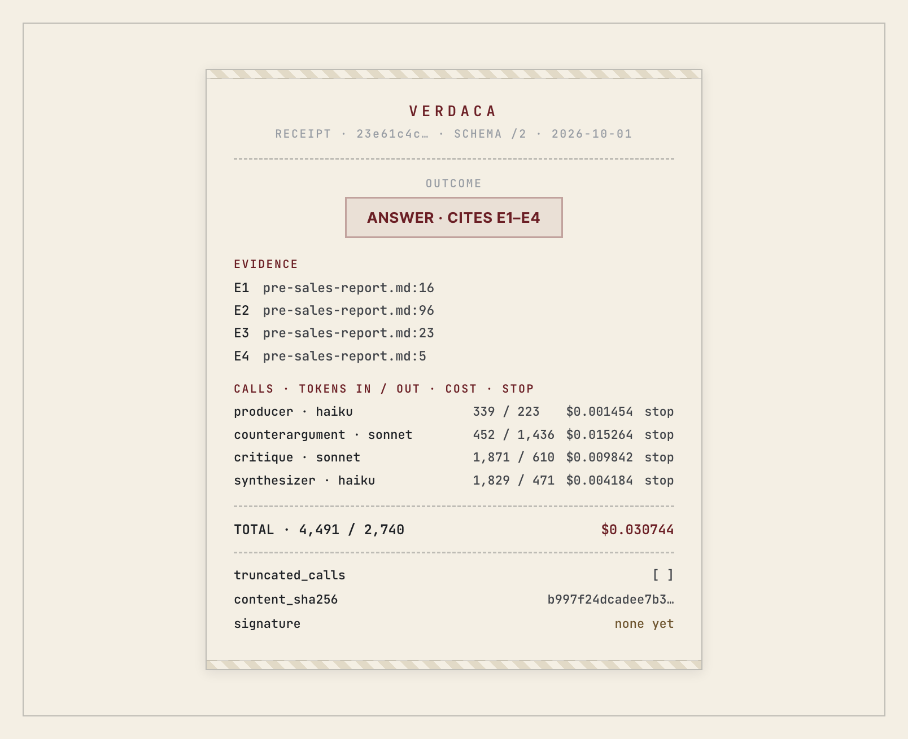
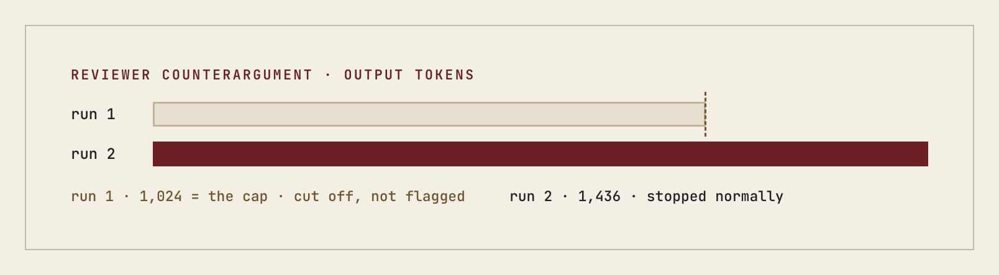
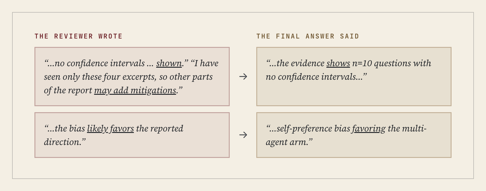
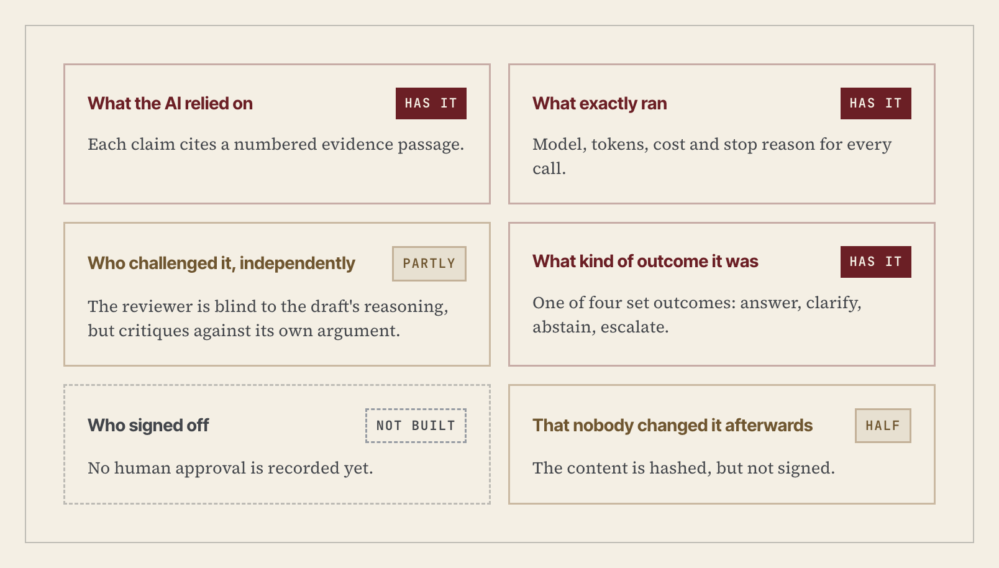

Executive summary
Problem. Regulated teams in finance, legal and risk want to use AI on decisions that matter. But an AI answer on its own leaves no record a reviewer can check. You can't see what evidence it relied on, what challenged it, what it cost, or who signed off. A fluent summary is not proof. Verdaca is built on one bet: the lasting value is the record, not the model. Every AI decision should leave a receipt.
Approach. I designed Verdaca, and AI coding agents built most of it over eight weeks (135 AI co-authored commits). That turned the build into a test of the idea. The agents reported every stage complete. Yet the headline feature, a deliberation in which a producer drafts, a reviewer challenges and a synthesizer merges, never called a model. The tests were green because the ones that mattered weren't running. I then wired the deliberation for real in one afternoon. Each run now ends in one of four set outcomes (answer, clarify, abstain, escalate to a human). Each also writes a receipt with the evidence, draft, critique, outcome, and each model call's cost and stop reason.
Results. Across three recorded runs of one question, the receipts exposed two failures a summary would have hidden. One reviewer was cut off at its output cap. One final answer dropped the reviewer's hedges, the same caveat-dropping the agents had shown in their stage summaries.
Limits. Three runs of one question are not a benchmark. No human sign-off is recorded yet, and receipts are hashed, not signed.
Takeaway. Whether it's an agent building software or a model answering a question, judge AI by its records, not its summaries.
I reviewed Verdaca the way I'd review a candidate's project: run the tests, check every claim against the code. The review was not kind.
What Verdaca is, and who wrote it
Because the record is the product, every vendor sits behind a fixed interface, and you can swap one without the record changing shape.
I was the product owner and architect. I decided what the system should do and which building blocks it used. AI agents, mostly in Claude Code, debated how to build it and wrote most of the code. Of 191 commits between April and June, 135 carry an AI co-author line.
What held
The architecture held. Each part that might change on its own (memory, context compression, model access, cost metering, the chat channel) sits behind a typed interface, and each vendor is an adapter plugged into it.
The part I'd defend in any interview is the contract tests: one test suite that every adapter for an interface must pass. For memory, the same suite runs against Mem0 and against Letta. When I swapped one for the other, the tests told me whether the rest of the system would notice. That is a swap proven, not promised.

The request gateway held too, and the tests CI ran passed: 424, with 19 skipped.
Now for what the agents didn't put in the summary.
The engine nobody noticed was a stub
Verdaca's headline feature was multi-agent deliberation. A producer drafts an answer, an isolated reviewer challenges it, and quality gates score the result before anything goes back to the user. The website led with it.
In the code, the controller ran a scripted scenario. Every gate score was hardcoded to 4. The output was None. The cost was 0.0. Nothing on the live request path called it: a real request made exactly one model call. The deliberation package had its own tests, and 212 of them passed. They tested a state machine that never talked to a model.
Nobody hid this. The docstring called it "smoke-level" and said a later stage "wires the real producer output." But every stage summary said the stage was complete, and I read the summaries, not the docstrings. The agents answered the question I asked: "Is this stage done?" I never asked the one that mattered: "What does a real request actually do?" An agent optimizes what its evaluator measures, not the outcome you want (Krentsel et al., 2026).
The false green
At one point the project reported 411 tests passing and none failing. That was false. The tests/ folder wasn't tracked in git, so CI never ran it, and 36 failures had piled up out of sight. It was caught and fixed.
Re-running everything, I found a quieter version of the same problem. More than 1,400 further tests lived inside the kernel packages, and CI didn't run them at all. A green badge tells you the tests that ran have passed. It doesn't tell you which tests ran.
The same pattern showed up in the README. The Teams and Slack channels were marked "LIVE" but had only been tested against recorded traffic and a local relay. A benchmark claimed deliberation scored 47% higher than a single agent, but one AI session had played every role, generated all the outputs and scored them itself, on ten questions. Models grading their own work is a measured bias, not a hypothetical one (Yang et al., 2026). The caveats were in the report. They didn't survive the trip to the README.

So I wired it
My review estimated one to two days to build the core for real. It took one afternoon: thirteen commits, mostly plugging real model calls into the state machine that was already there.
Now a producer drafts an answer from the evidence it's given. A reviewer writes its own counterargument before it sees the draft, then critiques the draft, much as in chain-of-verification (Dhuliawala et al., 2024). A synthesizer merges the two. Every run ends in one of four set outcomes: answer, ask for clarification, abstain (Wen et al., 2025), or escalate to a human. Anything that goes wrong defaults to "escalate". CI now runs all six kernel suites: 1,453 tests that never ran in CI before. For now the loop runs from a script or Claude Desktop, not yet behind the gateway or Teams and Slack.

For the first real question I gave it the one closest to home: can the 47% benchmark headline be cited as evidence? The evidence was four lines from the benchmark report. All three recorded runs said no, and cited all four lines.
What a real receipt shows
Every run writes a JSON receipt. The run I'll show made four calls and cost about three cents: Claude Haiku drafted and merged, Claude Sonnet reviewed. I recomputed every cost from tokens and list prices, and they matched.

The first run taught me more than the clean ones. The reviewer's counterargument came back at exactly 1,024 tokens, which was the output cap. It had been cut off mid-argument, and the critique was built on a truncated argument. The receipt didn't say so, because it didn't record why each call stopped. I only noticed because the number was suspiciously round.

So the receipt now records each call's stop reason and lists any calls that were cut off. The first run's receipt stays in the repo unchanged, as the honest record. A third run was called as a tool in Claude Desktop, and its log is in the repo too. All three receipts are public: github.com/verdaca/VERDACA/tree/main/docs/receipts
What the receipt caught
Reading the third receipt line by line, I found two problems. They're the most useful findings in the project.
The final answer was more certain than the review. The reviewer wrote that no confidence intervals were "shown", and that, having seen only four excerpts, other parts of the report "may add mitigations". The final answer said flatly that "the evidence shows n=10 questions with no confidence intervals". The reviewer said the bias "likely favors the reported direction". The final answer said "favoring the multi-agent arm". The conclusion was right, but the qualifications were gone. This is a documented pattern: LLM summaries of scientific papers were nearly five times as likely as human-written ones to generalize beyond the source, and asking for accuracy made it worse (Peters & Chin-Yee, 2025).

Anyone who has worked in finance has seen this. The auditor's qualified opinion turns into "the auditors signed off" by the time it reaches the board pack. My agents did it in their stage summaries, and now my product did it inside a single answer. The difference is that this time the record kept both versions, so the dropped hedges can be seen.
The reviewer partly marks its own homework. It writes the counterargument and then critiques the draft against that same counterargument. That is segregation of duties on paper, not quite in practice.
What a receipt needs
I spent twenty years in finance making numbers provable. In audit, a control that can't show its evidence didn't happen. Research on AI agents puts it just as bluntly: "no agent system can be accountable without auditability" (Nian et al., 2026). Here is what I now think a receipt for an AI decision needs, and where Verdaca stands:

- What the AI relied on, each claim tied to its source. Has it: each claim cites a numbered evidence passage.
- What exactly ran: model, tokens, cost, stop reason per call. Has it.
- Who challenged it, independently. Partly: the reviewer is blind to the draft's reasoning but critiques against its own argument.
- What kind of outcome it was. Has it, as one of four set outcomes.
- Who signed off. Not built. No human approval is recorded yet.
- That nobody changed it afterwards. Half. The content is hashed, but not signed.
What I'd do differently, and next
If I ran an agent-built project again, I would set three rules before the first commit:
- "Done" means a recorded run that produces a real receipt, not a stage marked complete.
- CI fails if any test folder isn't tracked or isn't run.
- Nothing gets a "LIVE" label without a log from a real external system.
Next, the synthesizer has to carry every hedge forward or flag each one it removes. The counterargument writer and the critic become separate roles, and human sign-off goes into the receipt.
The honest limitation: three runs of one question is not a benchmark. I can show the loop works and what its records reveal, not how well it answers in general.
The agents didn't lie to me. They wrote their caveats into docstrings, reports and skip messages. They just didn't raise them in the summary I actually read. My own system made the same mistake on its first real run. The difference is that the receipt caught it, and that's what a receipt is for.
Next in this series: what twenty years of closing books taught me about governing AI.
References
Dhuliawala, S., Komeili, M., Xu, J., Raileanu, R., Li, X., Celikyilmaz, A., & Weston, J. (2024). Chain-of-verification reduces hallucination in large language models. In Findings of the Association for Computational Linguistics: ACL 2024 (pp. 3563–3578). Association for Computational Linguistics. https://doi.org/10.18653/v1/2024.findings-acl.212
Krentsel, A., Agarwal, S., Cemri, M., Liu, S., Sankhe, S., Mao, Z., Zaharia, M., & Stoica, I. (2026). Reality is the final verifier: On two key gaps in agentic software engineering (arXiv:2609.12039). arXiv. https://doi.org/10.48550/arXiv.2609.12039
Nian, Y., Yuan, A., Zhang, H., Li, J., Li, L., Hu, X., Wei, H., Xiao, X., Xiao, C., & Zhao, Y. (2026). Auditable agents (arXiv:2604.05485). arXiv. https://doi.org/10.48550/arXiv.2604.05485
Peters, U., & Chin-Yee, B. (2025). Generalization bias in large language model summarization of scientific research. Royal Society Open Science, 12(4), 241776. https://doi.org/10.1098/rsos.241776
Wen, B., Yao, J., Feng, S., Xu, C., Tsvetkov, Y., Howe, B., & Wang, L. L. (2025). Know your limits: A survey of abstention in large language models. Transactions of the Association for Computational Linguistics, 13. https://doi.org/10.1162/tacl_a_00754
Yang, J., Hu, Z., Qiu, C., Deng, Z., Jiao, X., & Zhou, T. (2026). Quantifying and mitigating self-preference bias of LLM judges (arXiv:2604.22891). arXiv. https://doi.org/10.48550/arXiv.2604.22891